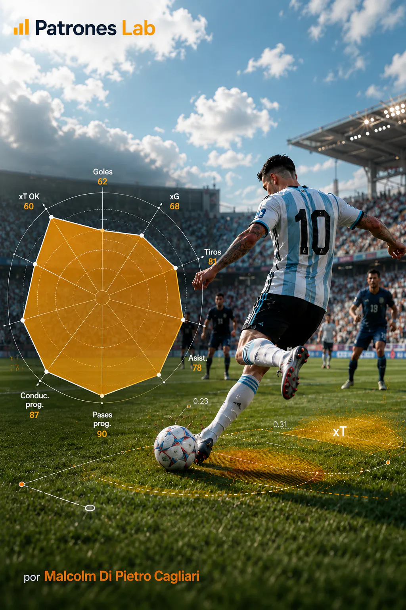

Gol Attesi nel Calcio
Modello di regressione logistica che stima la probabilità che ogni tiro diventi gol con dati pubblici StatsBomb, validazione per partita e applicazione al Mondiale Qatar 2022.
Modello di regressione logistica che stima la probabilità che ogni tiro diventi gol con dati pubblici StatsBomb, validazione per partita e applicazione al Mondiale Qatar 2022.

Modello probabilistico di Expected Threat nel calcio basato su dati pubblici StatsBomb. Stima la probabilità di gol nelle successive 5 azioni.

Analisi delle statistiche del Mondiale 2022 con dati pubblici StatsBomb, orientata a sintetizzare le prestazioni individuali e confrontare i giocatori con radar dei percentili.

Simulazione di un milione di scenari del Mondiale 2026 basata sui rating Elo per stimare le probabilità di raggiungere le semifinali, disputare la finale e diventare campione.